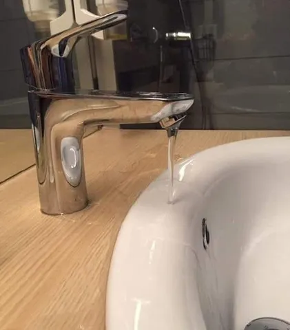

Бизнес-план
Периодически на внутренней доске объявлений встречаю предложения по съему квартир. Коллеги часто сдают друг другу квартиры ниже рынка, получая проверенного и адекватного арендатора взамен на скидку. И иногда там встречается фича - "свежий ремонт, сдается впервые, никто раньше не жил!". Ага. Как будто это хорошо. Как будто от этого цена должна быть выше. Нет же!
У свежего ремонта, в котором никто не жил, очевидно будут "детские болячки". Только пожив несколько месяцев, их можно выявить и устранить.
Найти весь брак и косяки.
Заметить огрехи эргономичности.
Проверить все системы и инженерку.
Перенастроить технику.
Поменять шторы, потому что слишком светло.
Передвинуть тумбочку, стоящую аккурат на траектории мизинца ноги.
В общем, провести пусконаладку и обкатку.
И я должен за это еще и больше платить? Ну уж дудки. Предлагаю иначе - это вы (арендодатель) мне платите, чтобы я пожил у вас в свежем ремонте и обкатал его. А когда квартира будет готова к заселению живого человека - с него и берите деньги. Ладно, у меня, на самом деле, своя квартира есть. Но идею готов подарить читателю. А то ишь, повадились драть деньги за сырой продукт.
Периодически на внутренней доске объявлений встречаю предложения по съему квартир. Коллеги часто сдают друг другу квартиры ниже рынка, получая проверенного и адекватного арендатора взамен на скидку. И иногда там встречается фича - "свежий ремонт, сдается впервые, никто раньше не жил!". Ага. Как будто это хорошо. Как будто от этого цена должна быть выше. Нет же!
У свежего ремонта, в котором никто не жил, очевидно будут "детские болячки". Только пожив несколько месяцев, их можно выявить и устранить.
Найти весь брак и косяки.
Заметить огрехи эргономичности.
Проверить все системы и инженерку.
Перенастроить технику.
Поменять шторы, потому что слишком светло.
Передвинуть тумбочку, стоящую аккурат на траектории мизинца ноги.
В общем, провести пусконаладку и обкатку.
И я должен за это еще и больше платить? Ну уж дудки. Предлагаю иначе - это вы (арендодатель) мне платите, чтобы я пожил у вас в свежем ремонте и обкатал его. А когда квартира будет готова к заселению живого человека - с него и берите деньги. Ладно, у меня, на самом деле, своя квартира есть. Но идею готов подарить читателю. А то ишь, повадились драть деньги за сырой продукт.

502 просмотров · 13 реакций
Открыть в Telegram · Открыть пост на сайте